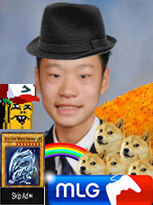
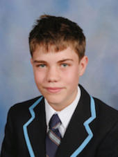
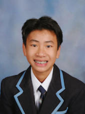
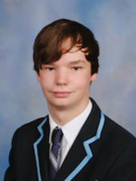
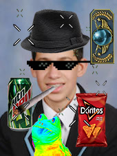
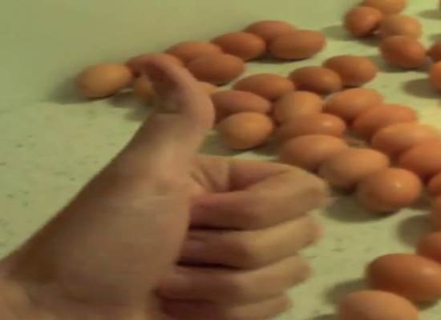

A Brief History
The Füd website was made for an I.T. project at Camberwell Grammar School. The ITE 'Dijkstra' class has nineteen members, including the teacher, Mr. Fowler. This website was made for the young and inspired cooks looking for quality recipes with an easy layout. Using HTML5 and CSS3 as well as a major colaborative effort, this website has hit the internet with no advertising, giving an extremely enoyable experience on a quality website.
Contributors

Mr Fowler
Mr Fowler was the leader of this project. With inspiring speeches and informative videos, Fowler taught the web-designers of this website what they needed to know to make each and every webpage.

Charles
Charles was a major contributor to the Füd website, creating most of the navigation bar and layout. Charles also made pages for different special recipes.
Ryan
Ryan was the constructor of the website, making sure that every page had the same links and that each page was accessible from the navigation bar. Ryan is thanked for undergoing this difficult task.
Charles
Charles is a web-designer with a large and expansive knowledge in HTML and CSS. Charles fixed many bugs relating to the navigation bar and was a major help to struggling webpage designers.

James
James was a major contributor to the Füd website, creating one of the later rejected layouts for the website single-handedly. James also made a page for delicous butter among other food.
Nathan
Nathan gave a decent contribution to the website, by creating multiple webpages and creating the About Füd page. He is also incredibly handsome and talented.
Nicholas
Nicholas gave a major contribution to the Füd website, creating multiple rejected page designs as well as many delicous recipes - all of which are worth a try!
Harry
Harry gave a decent contribution to the Füd website, creating webpages but, perhaps most interestingly, he also created the name for the website.

Leon
Leon gave a decent contribution to the website, making webpages for delicous recipes as well as giving helpful advice to those who needed it.
Sam
Sam gave a major contribution to the Füd website with his immense knowledge in HTML as well as IT in general and his delicous recipes that are certainly worth a try.
Dili
Dili gave a decent contribution to the Füd website. Notably, Dili's laptop fell apart half way through the designing of the website, leaving his work in pieces, however he continued to work.
Ethan
Although away for part of the design process, once present, Ethan gave a large contribution to the website and multiple mebpages that he worked on.
Matt
Matt was able to put in some effort towards the later stages of website development such brought about a recipe for Potato Salad..

Andrew
Andrew created many stunning web pages for different recipes. Andrew's contribution to the website certainly did not go unnoticed, fiixng many problems along the way.
Justin
Justin went into the website-designing process with a vast background in HTML and CSS and continued making beautiful websites that stunned both Mr. Fowler as well as viewers.

Julian
Julian made a decent contribution to the Füd websites with his personalised recipe pages for food that sends shivers down your spine just thinking about it they're so good!
Travis
Travis contributed towards the later stages of the website devlopment and made huge improvements due to the layout of our navbar and many more.

Sean
Sean did stuff.
Thomas
Thomas was Kim Jong Un's main supporter and any offence made to North Korea should be directed to him
Ainsley Harriot
For the inspiration to so many great cooks and wanna-bes around the world, it is fitting that we give credit to the possibly - if not certainly - greatest cook of all time.

For many simple and easy-to-follow recipes, it is hard to leave out HowToBasic's contribution to all cooks looking for an easy start. We especially thank their cheesecake video for inspiration!
Kim Jong Un
Special mention to the great man that made all of this possible. Thanks for inspiring us on a daily basis to make an extraordinary website under your expertise guidance. All hail Kim Jong Un and North Korea